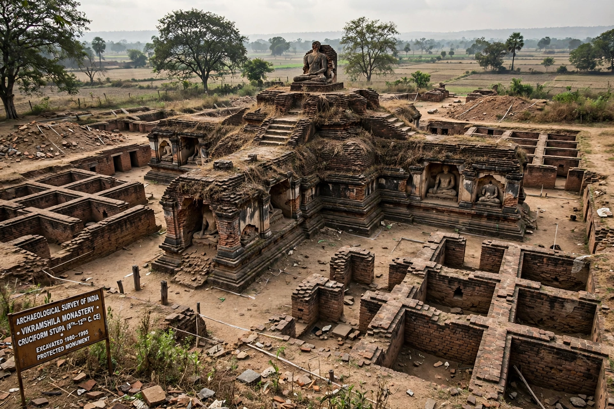

| Location | Antichak village, Bhagalpur district, Bihar, India |
|---|---|
| Founded | Late 8th – early 9th century AD |
| Founder | King Dharmapala of the Pala Empire |
| Type | Buddhist monastic university (mahavihara) |
| Abandoned | c. 1193–1203 (destroyed) |
Vikramashila (IAST: Vikramaśīla) was one of the great Buddhist monastic universities (mahaviharas) of medieval India, alongside Nalanda and Odantapuri. Founded by the Pala emperor Dharmapala (r. c. 770–810) on a bluff overlooking the Ganges in present-day Bhagalpur district, Bihar, it flourished for some four centuries as the empire's premier center for the study of Vajrayana (Tantric) Buddhism, logic, grammar, and philosophy, and played a decisive role in transmitting Indian Buddhism to Tibet.
According to Tibetan histories, Dharmapala established Vikramashila in response to a perceived decline in scholarship at Nalanda, endowing it with royal patronage and a staff of distinguished pandits. The monastery grew into a walled complex organized around a great cruciform central stupa, with — Tibetan sources report — six great colleges, each with its own faculty, and a total establishment of around 160 teachers and over a thousand resident monks. Admission and academic standards were guarded by six celebrated "gate-scholars" (dvara-panditas), among them Ratnakarashantipada at the eastern gate and the philosopher Ratnakīrti among its luminaries; the great tantric master Naropa is also associated with the monastery.
Vikramashila's most famous abbot was Atisha Dipankara (982–1054), who headed the monastery before accepting the invitation of the kings of western Tibet and departing in 1040 on the mission that revitalized Tibetan Buddhism. Through Atisha and dozens of Vikramashila-trained translators, the monastery's tantric lineages and scholastic curriculum passed wholesale into Tibet, where its memory is preserved in detail in Tibetan historical literature.
The monastery was destroyed by the forces of the Turkic general Bakhtiyar Khilji around 1193–1203, during the same campaigns that ended Nalanda and Odantapuri; the Tibetan pilgrim Dharmasvamin, visiting a generation later, found the site largely ruined. The remains were identified in the 20th century with the mound at Antichak village, and excavations by the Archaeological Survey of India (1960s–1980s) uncovered the vast cruciform stupa, monastic cells arranged in a square plan for roughly 208 monks, a library building with evidence of a cooling system of water channels, and numerous votive stupas, sculptures, and terracotta plaques. A modern university named for it, Vikramshila University, was established at Bhagalpur.